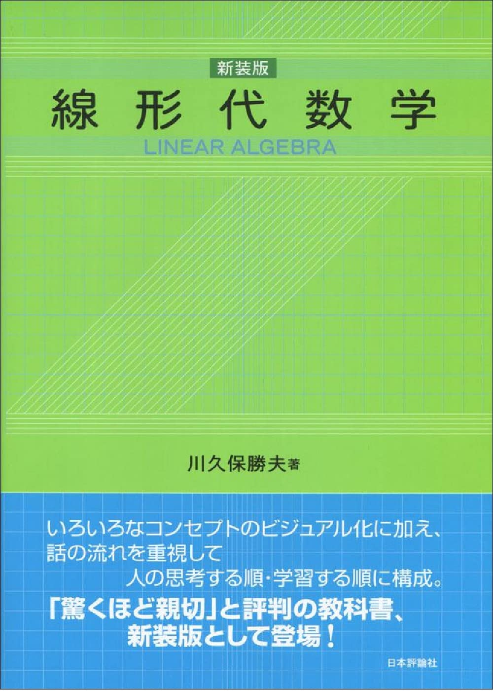
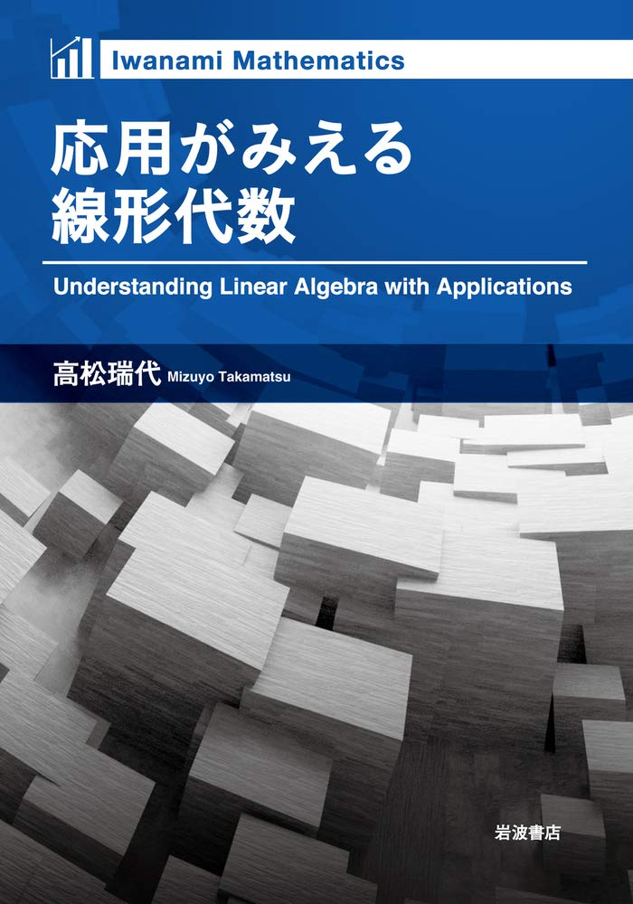

線形代数学
理系大学生は避けて通ることのできない線形代数学についての参考書紹介ページです。

線型代数 長谷川浩司著
なぜ線形代数を学ぶのか？という話からはじまり、2×2の行列についての内容をたっぷりと扱ってから本格的な線形代数の中身に入っていくやさしい教科書。抽象的な話からはじまって挫折しかけているそこの君！諦めるのはまだ早い！とりあえずこの本読んで！
線形代数 加藤文元著
姉妹本としてチャート式の演習書がある唯一無二の教科書。高校の教科書や参考書を読んでいる感覚で勉強ができるので、受験に染まりきったままの大学1年生にとってありがたすぎる一冊。最近の教科書の多様化はスゴい
まずはこの一冊から 意味がわかる線形代数 石井俊全著
躓きやすい単元をこれでもかという丁寧さで教えてくれる。これより易しい本を見つけるのはムリかも。副読本として使おう

線形代数学 川久保勝夫著
初学者向けにとても丁寧に書かれている良書。ビジュアル化することをコンセプトにして書かれており、スラスラ理解できる。定理とその証明が淡々と書かれる本とは違い、どうしてそういった概念に至るのかという流れが語られているため納得しながら進めるのはとてもうれしい。

応用がみえる線形代数 高松瑞代著
どうしてこんな勉強してるんだろう？こんなに沢山の数字を書いて意味があるのかな？もう手が疲れたよ。となりがちな線形代数に華を添えてくれる素敵な一冊。線形代数が持っている真の力をいくつも(主成分分析、画像圧縮処理、ページランクなど)教えてくれる
明解演習線形代数 小寺平治著
線形代数の演習書で最もおススメするのがこの一冊。問題数が豊富であることや詳しい解説が載っているのは当然として、各単元の要点をまとめたページも非常に有用。院試対策にももってこいだ。